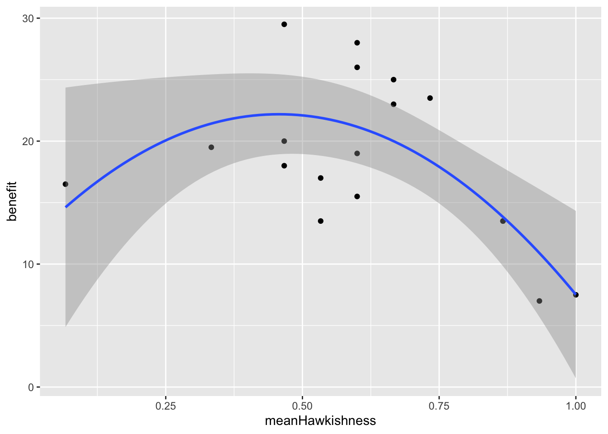

21 From population biology to fitness
The purpose of this practical is to draw clear links between the first part of the course (population biology) and the second part of the course (evolution).
Learning outcomes:
- Understanding the relationship between population growth and the concept of fitness.
- Understanding the concept of an evolutionary trade-off.
We will focus on the concept of fitness.
Fitness is a slippery concept, but it is widely accepted that it is closely related to population growth rate. In this class you will explore this concept using some mathematical modelling (aagh!).
This practical uses RStudio (R). It is similar to the previous exercise on matrix population models, but ask for help if you get stuck!
21.1 An in silico experiment
As you learned in the classes on age and stage structured population dynamics differences in survival and reproduction can be modelled using matrix population models (MPMs). These models can be simple or complex, and can be thought of as mathematical descriptions of the life history of the species (or population) in a particular environment.
In an earlier you will have played with construction and analyses of these models by creating MPMs for species with different life histories such as high juvenile survival, or low juvenile survival etc.
We will first need to load the popdemo package like this. Note that if you have not installed this package you should first install it with the command install.packages("popdemo").
Let’s set up our baseline model. This model describes a population of some mammal species which we have divided into 3 stages: juvenile, adult and senescent (old).
You can “read” the matrix by looking at the columns and rows: a value in the column 3 and row 1 tells you the “transition” from stage 3 to stage 1. In this case, it is saying that an individual in the adult age class produces an average of 4 babies, and one from the senescent age class produces 2 babies. Juveniles have a probability of 0.1 (10% chance) to survive to adulthood (and they reach maturity in 1 year, so there is no “stasis” where they can remain being juveniles). Adults can survive in 2 ways, they can survive and remain as adults (probability = 0.8) or they can survive and transition to being in the senescent age class (probability = 0.1). Therefore, the total survival probability is 0.9. Senescent adults survive less well (probability = 0.4).
We can project a population like this:
initial <- c(10,5,3) # just some random numbers
pr <- popdemo::project(A1, vector = initial, time=8)Take a look at pr, the projected population. This gives you the total population size, and below that the population sizes in each stage.
## 1 deterministic population projection over 8 time intervals.
##
## [1] 18.00000 32.70000 31.18000 37.51200 42.93080 50.15272 58.36605 68.04116
## [9] 79.29730You can access the population sizes of the different stages using vec(pr).
## S1 S2 S3
## [1,] 10.00000 5.00000 3.000000
## [2,] 26.00000 5.00000 1.700000
## [3,] 23.40000 6.60000 1.180000
## [4,] 28.76000 7.62000 1.132000
## [5,] 32.74400 8.97200 1.214800
## [6,] 38.31760 10.45200 1.383120
## [7,] 44.57424 12.19336 1.598448
## [8,] 51.97034 14.21211 1.858715
## [9,] 60.56588 16.56672 2.164697Let’s plot this… Check out how, after a “transient” period, there is exponential growth in all stages of the population. The population is growing steadily with a fixed population growth rate (\(\lambda\)).
pop <- vec(pr)
matplot(pop,type="l",log="y")
legend("topleft",legend = colnames(pop),col=1:ncol(pop),lty=1:ncol(pop))
You can see that the population is increasing and we can calculate the precise population growth rate (\(\lambda\)) like this:
## [1] 1.165587Thus, the population is growing at 16.56% per year.
So where does evolution come in?
21.2 The link to fitness
In this population consider that suddenly a mutation arises in an individual parent that causes it to give more care to their offspring. For example, maybe they provide milk with a higher fat content, or build a safer nest. Whatever the mechanism, let’s assume that it results in a small increase in juvenile survival.
We can simulate this by increasing the juvenile survival in the matrix model from 0.10 to 0.11.
What effect does that have on population growth rate?
## [1] 1.192317The small increase in juvenile survival has resulted in a small increase in population growth rate, from 16.56% to 19.23% per year.
If you consider that the original population now consists of two genotypes – “ordinary” and “caring” – what do you think will happen to the percentage of the two genotypes through time?
You can be sure that the proportion of the caring genotype will grow faster than the ordinary genotype. It is the FITTER genotype.
21.3 Introducing a trade-off
It is common that apparently beneficial behaviours or innovations come at a cost. In evolutionary biology these are called trade-offs.
Let’s explore such a trade-off now and see how it might affect fitness.
We’ll stick with the same example above, but we’ll introduce a new genotype that has a trade-off between juvenile survival and old-adult survival.
The benefit is clear: a change in adult behaviour or physiology increases juvenile survival a little bit. But such changes often come with a cost: The new genotype allocates extra resources to babies but this exhausts the adults causing older adults to have very small survival probability.
Is this new genotype viable? In other words, is the fitness of the genotype greater than that of the original genotype? If so, the new genotype will come to dominate the population.
Modify the matrix to reduce old adult survival to, say 0.05 (5% survival) and re-calculate the population growth rate.
Is this “trade-off genotype” fitter than the original one? i.e. is the small benefit worth the large cost?
Try doing the same thing for the prime-age adults. How much can you reduce survival before the cost is not worth bearing?